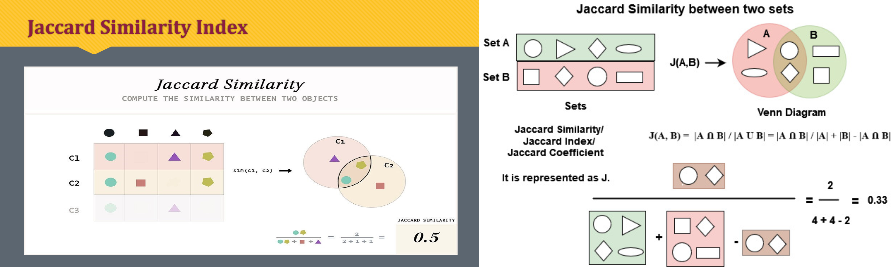

Predict the rating for a User / Item pair using Jaccard Similarity
Oct 2022 - Dec 2022
Arizona State University, Tempe, Arizona
Introduction
The objective is to predict user ratings for new books they read in the future, using various Machine Learning Algorithms, including Linear Regression, Logistic Regression, Bag of Words, and Jaccard Similarity. The investigation aims to determine which machine learning approach provides better accuracy and Mean Square Error for predicting user ratings based on their previous ratings and reviews of books.
Analysis
Data Exploration
- Checked and removed null/empty values from the data.
- Encoded user_id and book_id from hashed strings to integers.
- Removed the primary key "review_id" as it has no correlation with the rating.
- Removed timestamp fields "date_added," "date_read_at," and "started_at" as they are not useful.
- Eliminated fields "n_votes" and "n_comments" as they were mostly null/empty.
- Conducted data visualization, showing rating distribution on a bar chart.
Algorithms and Techniques
Jaccard Similarity
- Used to compute similarity between two objects, such as text documents.
- Commonly used in data science applications for text mining, e-commerce, and recommendation systems.
- Implemented for predicting ratings based on user-item pairs.
Linear Regression
- Used to predict a variable's value based on another variable.
- Estimates coefficients of a linear equation that best predicts the dependent variable's value.
- Applied for predicting ratings.
Logistic Regression
- Used for classification and predictive analytics.
- Estimates the probability of an event occurring based on independent variables.
- Applied for predicting binary outcomes, such as voting.
Bag of Words
- Represents text by measuring the presence of known words in a document.
- Involves a vocabulary of words and a measure of word presence.
- Applied for predicting ratings based on review text.
Implementation
Bag of Words Approach
- Predicted ratings using the top 1000 most frequent words in review text.
- Generated a strength matrix with integer values for each data entry.
- Split the dataset into 90% training and 10% testing for Linear and Logistic regression.
Jaccard Similarity
- Used a similarity-based approach to predict ratings.
- Compared user/item pairs to previously rated items to generate similarity scores.
- Considered previous user ratings to predict ratings for new items.
Results
Metric: Mean Square Error (MSE)
- Bag of Words with Linear Regression: MSE = 1.575
- Bag of Words with Logistic Regression: Accuracy = 45.5%
- Jaccard Similarity: MSE = 1.837
Conclusion
Jaccard Similarity outperformed the Bag of Words approach in predicting ratings. This machine learning model can be adapted for predicting hotel review ratings or providing product recommendations based on user ratings and purchase patterns.
Check out the project here GitHub for code.